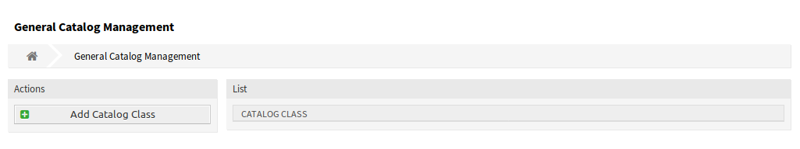

通用目录¶
使用此屏幕可将目录类和项添加到系统中。 如果仅将此软件包安装到系统而没有任何 OTRS::ITSM 软件包的情况下，则通用目录不包含任何条目。 安装其它的 OTRS::ITSM 软件包（例如 ITSM核心），将一些类和项添加到目录中。 通用目录管理屏幕位于 系统管理 组的 通用目录 模块中。

通用目录管理屏幕
管理通用目录¶
若要添加一个目录类：
- 点击左侧边栏的 添加目录类 按钮。
- 填写必填字段。
- 点击 保存 按钮。

添加目录类屏幕
警告
无法从系统中删除目录类。只能通过将 有效性 选项设置为 无效 或 临时无效 来停用它们。
若要添加一个目录项：
- 从目录类列表中选择一个目录类。
- 点击左侧边栏的 添加目录项 按钮。
- 填写必填字段。
- 点击 保存 按钮。

添加目录项屏幕
警告
无法从系统中删除目录项。只能通过将 有效性 选项设置为 无效 或 临时无效 来停用它们。
若要编辑一个目录项：
- 从目录类列表中选择一个目录类。
- 选择目录项列表中的一个目录项。
- 修改字段。
- 点击 保存 或 保存并完成 按钮。

编辑目录项屏幕
目录类设置¶
添加此资源时，可以使用以下设置。 标有星号的字段是必填字段。
- 目录类 *
- 目录类的名称。 目录类将显示在目录类的概览表中。
- 名称 *
- 要添加到类中的目录项的名称。 可以在此字段中输入任何类型的字符，包括大写字母和空格。 名称将显示在目录项的概览表中。
- 有效性 *
- 设置此资源的有效性。 如果此字段设置为 有效，则每个资源即可仅在 OTRS 中使用。 将此字段设置为 无效 或 临时无效 将禁止此资源的使用。
- 注释
- 向此资源添加附加信息。 为了更加清晰，建议始终将此字段填充为带有完整句子的资源描述。
目录项设置¶
添加此资源时，可以使用以下设置。 标有星号的字段是必填字段。
- 目录类
- 目录类的名称。 在此屏幕中是只读的。
- 名称 *
- 要添加到类中的目录项的名称。 可以在此字段中输入任何类型的字符，包括大写字母和空格。 名称将显示在目录项的概览表中。
- 有效性 *
- 设置此资源的有效性。 如果此字段设置为 有效，则每个资源即可仅在 OTRS 中使用。 将此字段设置为 无效 或 临时无效 将禁止此资源的使用。
- 注释
- 向此资源添加附加信息。 为了更加清晰，建议始终将此字段填充为带有完整句子的资源描述。